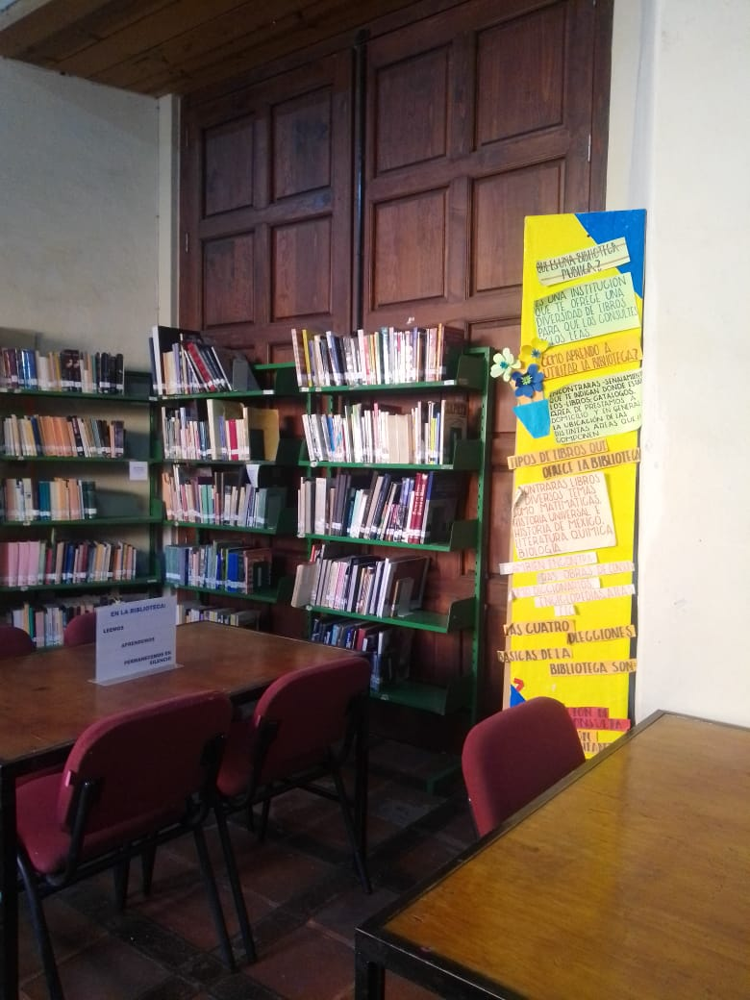
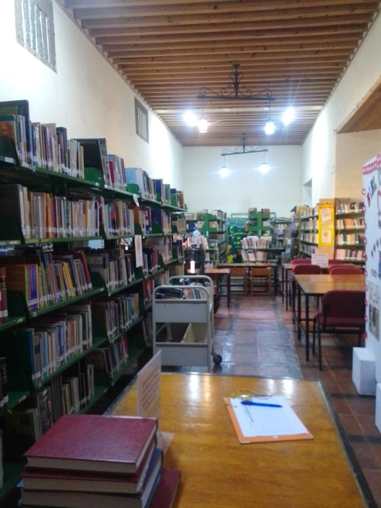

En el portal del Diezmo contiene una de las bibliotecas más antigua de san juan del rio, en esta bilbioteca se puede realizar tramites para una credencial gratuita y facil de tramitar con solo entregar un comprobante de domicilio o una fotografia personal. Al finalizar el tramite las personas ya sea infantiles, jovenes o adultos podran llevarse los lbros un cierto tiempo predeterminado o mismo ocuparlos dentro de la bilbioteca.>

Las bibliotecas ofrece el servicio de apoyo de tareas para los alumnos que vienen por prroblemas en sus tareas,
en el portal del Diezmo tambien ofrece los talleres de verano a niños y jovenes. Existe un programa que maneja
la jefatura de servicios educativos que es bibliotecas al escuela ya sea una escuela prescolar, primaria o secundaria
quieren realizar una visita a una de las bibliotecas para el somento de la lectura en los jovenes.
Lunes a viernes 10.00 a 19.00 hrs.
Dirección Av. Juárez No. 30, Centro Portal del Diezmo CP 76800, San Juan del Río, Querétaro Tels.: 427 272 4215
